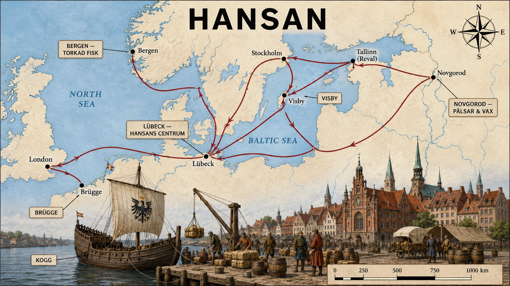
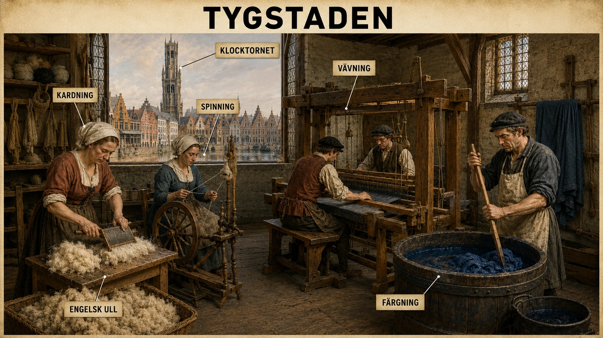

— när städer blev mäktigare än kungariken och världen krympte —
Hansan — handelsnätverket som band ihop Östersjön och Nordeuropa
På medeltiden växte handeln i Europa. Jordbruket blev bättre, befolkningen ökade, städerna växte — och städerna behövde varor från andra håll. I norra Europa blev Hansan det viktigaste handelsnätverket.
Inte ett land — ett samarbete
Hansan var inte ett rike. Det fanns ingen kung som styrde. I stället var det ett samarbete mellan köpmän och städer, framför allt tyskspråkiga handelsstäder runt Östersjön och Nordsjön. Den viktigaste staden var Lübeck, som låg strategiskt mellan Östersjön och Västeuropa.
Köpmännen var organiserade i handelsgillen. Ett handelsgille var en sammanslutning som hjälpte sina medlemmar — med transporter, skydd mot rövare, lån, information och förhandlingar. Det var farligt att handla ensam. Tillsammans blev köpmännen starkare.
Rutterna
Handeln gick i flera riktningar. Österut: Lübeck → Visby → Stockholm → Tallinn (Reval) → Novgorod, där pälsar, vax och trä köptes in. Norrut: till Bergen i Norge, där torkad fisk var den viktigaste varan. Västerut: till London och Brügge i Flandern, där Hansan möttes med handeln från Sydeuropa.
Vad det betydde för Sverige
För Sverige betydde Hansan både möjligheter och beroende. Visby på Gotland blev en av Hansans rikaste städer. Stockholm växte fram som handelsplats mellan Mälaren och Östersjön. Tyska köpmän bosatte sig i svenska städer. Tyska ord, lagar och sätt att organisera handel påverkade svenska stadslivet.
Men samtidigt fick utländska köpmän stort inflytande över svensk handel. Det är en viktig sak att förstå: handel ger makt, och den som kontrollerar handelsvägarna kan pressa även kungar.
Hansans makt
Eftersom Hansan kontrollerade Östersjöns viktigaste handelsvägar kunde städerna kräva privilegier av furstar och kungar — lägre tullar, rätt att handla på bestämda platser, skydd för sina köpmän. Vägrade en kung kunde Hansan svara med handelsblockad — eller krig.
Under medeltiden växte handeln kraftigt i Europa. Det berodde på att jordbruket blev effektivare, befolkningen ökade och fler människor kunde arbeta med annat än att odla mat. När städerna växte behövde de mer varor: mat, salt, järn, tyg, fisk, pälsar, vax, vin och kryddor. I norra Europa blev Hansan ett av de viktigaste handelsnätverken.
Hansan var inte ett land och inte ett rike med en kung. Det var snarare ett samarbete mellan köpmän och städer, framför allt tyskspråkiga handelsstäder runt Östersjön och Nordsjön. Den viktigaste staden var Lübeck, som låg strategiskt mellan Östersjön och Västeuropa. Därifrån kunde handelsmän organisera transporter både österut mot Östersjön och västerut mot Nordsjön.

Hansans nätverk band ihop Östersjön och Nordsjön till en sammanhängande handelszon. Koggen — det breda lastskeppet — var det som möjliggjorde allt. Från Lübeck kunde varor nå Novgorod på en sommar, Bergen på två veckor, London på en månad.
Ett viktigt begrepp är handelsgille. Ett handelsgille var en sammanslutning av köpmän som hjälpte varandra. Medlemmarna kunde samarbeta om transporter, skydda sina varor, låna pengar, dela information och förhandla med furstar och kungar. Det var farligt och dyrt att bedriva handel på medeltiden. Vägarna var dåliga, sjöfarten riskfylld och rövare kunde angripa handelsmän. Därför var det klokt att ingå i ett nätverk. Tillsammans blev köpmännen starkare än var och en för sig.
Hansans handelsrutter gick över stora delar av norra Europa. En viktig rutt gick från Lübeck till Visby på Gotland och vidare mot Stockholm, Åbo, Reval/Tallinn och Novgorod. Från öster kom pälsar, vax, trävaror och andra naturprodukter. Från Sverige exporterades bland annat järn, koppar, hudar, smör och fisk. En annan viktig rutt gick mot Bergen i Norge, där torkad fisk var en central handelsvara. Västerut gick handeln till London och Brügge i Flandern, där varor från hela Europa kunde bytas.
Hansan fick stor betydelse för stadstillväxten i Sverige. Under medeltiden växte flera svenska städer fram eller blev viktigare eftersom de låg vid handelsvägar. Visby blev en mycket rik och betydelsefull handelsstad i Östersjön. Där möttes köpmän från olika delar av Europa. Även Stockholm växte genom handeln, särskilt eftersom staden låg strategiskt mellan Mälaren och Östersjön. Från inlandet kunde varor transporteras till Stockholm och sedan vidare ut i Hansans handelsnät.
Handeln förändrade också livet i städerna. Det behövdes hamnar, lagerhus, vågar, tullar, hantverkare, skeppsbyggare, skrivare och människor som kunde räkna och skriva avtal. När handeln ökade blev städerna inte bara platser där man bodde, utan också ekonomiska centrum. Där fanns pengar, varor, nyheter och människor från andra länder. Många svenska städer fick starka tyska inslag. Tyska köpmän bosatte sig i svenska städer, och tyska ord, lagar och sätt att organisera handel påverkade stadslivet.
Men Hansan handlade inte bara om fredlig handel. Den kunde också använda makt. Eftersom hansestäderna kontrollerade viktiga handelsvägar kunde de pressa kungar och städer att ge dem privilegier, alltså särskilda rättigheter. De kunde få lägre tullar, rätt att handla på vissa platser eller skydd för sina köpmän. På så sätt blev Hansan en ekonomisk stormakt i norra Europa.
För Sverige innebar Hansan både möjligheter och beroende. Svenska bönder, bergsmän och stormän kunde tjäna pengar på att sälja varor utomlands. Samtidigt fick utländska köpmän stort inflytande över handeln. Det visar en viktig sak om medeltiden: makt handlade inte bara om riddare, borgar och kungar. Makt kunde också komma från handel, pengar, skepp och kontroll över vägarna mellan städer.
Köpmännen som blev en stormakt
På 1200-talet hände något ovanligt i norra Europa. Köpmän från en handfull tyskspråkiga städer, framför allt Lübeck, började samarbeta så systematiskt att de tillsammans blev en av Europas mäktigaste politiska krafter — utan kung, utan armé i vanlig mening, utan ett enda territorium. De kallades helt enkelt Hansan, efter ett gammalt tyskt ord för "skara" eller "följe".
Vid sin höjdpunkt på 1300- och 1400-talen omfattade Hansan över hundra städer och dominerade handeln över ett område som sträckte sig från London i väster till Novgorod i öster, från Bergen i norr till Brügge i söder. Det är ett område större än det medeltida Frankrike. Och allt detta organiserades inte av en härskare utan av borgmästare och köpmannafamiljer som möttes vid återkommande möten — så kallade hansetag.
Varför just norra Europa?
Hansan blev möjlig av en kombination av geografi, ekonomi och politik. Östersjön och Nordsjön bildade en sammanhängande sjöväg, från Novgorod i öster till London i väster. Vägarna på land var långsamma och osäkra; sjövägen var snabbare och billigare. Den som behärskade Östersjön behärskade alltså en av medeltidens viktigaste transportleder.
Samtidigt hade ingen enskild kung tillräcklig makt att kontrollera hela detta område. Tysk-romerska riket var splittrat i hundratals små furstendömen och fria städer. Danmark, Sverige, England och Polen var lokala makter. I detta maktvakuum fick städer chansen att forma sin egen politik — och då gjorde de det tillsammans.
Koggen — skeppet som möjliggjorde allt
Hansans makt vilade på ett skepp. Koggen var ett bredbukigt lastskepp med högt fribord, brant för- och akterstäv och ett enda stort rektangulärt segel på en kraftig mast. Den var långsam men kunde lasta mer än något tidigare nordeuropeiskt skepp — ofta över 100 ton. Med koggen kunde Hansan transportera billiga, tunga varor över långa avstånd och fortfarande gå med vinst: salt, säd, järn, trä, fisk i tunnor, öl.
Koggen var inte vacker, men den var ekonomisk. Och i handelns värld vinner ekonomi över estetik. Den som inte hade koggar kunde inte konkurrera med Hansan.
Kontoren — Hansan i utlandet
I de viktigaste utländska handelsstäderna byggde Hansan upp egna fasta kontor — befästa kvarter med lagerhus, bostäder, kyrkor och egna lagar. De fyra största låg i London (Steelyard, eller "Stalhof"), Brügge i Flandern, Bergen i Norge (Bryggen, som fortfarande står) och Novgorod i Ryssland (Peterhof).
Inne på kontoren gällde Hansans regler, inte värdlandets. Köpmännen levde nästan som munkar — ofta utan kvinnor, med stränga regler om tystnad, dygnsrutiner och uppförande. Det var inget livfullt liv. Men det fungerade: kontoren gjorde det möjligt att driva en effektiv internationell handel i en värld där tillit och säkerhet annars var bristvaror.
Hansan i Sverige
För Sverige blev Hansan både motor och boja. Det fanns inga stora svenska handelsskepp som kunde konkurrera med koggarna, och de svenska städerna var små. Visby blev — som ett undantag — under 1200-talet en av Östersjöns rikaste städer, full av tyska, gotländska och ryska köpmän som möttes där. Stockholm växte fram som en svensk-tysk dubbelstad: tyska borgare kunde i perioder utgöra hälften av rådet, och både tyska och svenska var stadens språk.
Det är detta som är paradoxen. Svensk handel växte tack vare Hansan — men den var i hög grad i tyska händer. Svenska kungar försökte gång på gång minska det tyska inflytandet, ibland med våld, ibland med lagstiftning. Hansan i sin tur försvarade sina privilegier — och tvekade inte att gå i krig om det krävdes.
När städer förde krig
För det är den verkliga poängen med Hansan: det var ett handelsnätverk som också var en militär makt. När den danske kungen Valdemar Atterdag tog Visby 1361 och stängde sundet för Hansans skepp svarade Hansan med att samla en flotta — och 1370 tvingade de Danmark att underteckna freden i Stralsund. Det blev ett av medeltidens märkligaste fredsavtal: kungar av Danmark fick i framtiden inte väljas utan Hansans godkännande.
Tänk efter ett ögonblick vad det innebär. En grupp städer — utan kung, utan eget territorium — bestämde villkoren för vem som fick bli kung av ett rike. Det är en bild av hur långt städernas makt kunde gå under högmedeltiden.
Vinnare och förlorare
Vem vann och vem förlorade på Hansans dominans?
Vinnare var stadsbourgeoisin — borgmästare, köpmän, handelsgillen — i Hansans medlemsstäder. Lübecks köpmannafamiljer blev en av Europas rikaste grupper utanför kunglig adel.
Förlorare var dels lokala härskare som tappade kontrollen över handeln (svenska kungar är ett tydligt exempel), dels lokala producenter som tvingades sälja till Hansans priser. En norsk fiskare i Bergen sålde sin torkfisk till de tyska köpmännen på Bryggen — och de tyska köpmännen bestämde priset. Det fanns inga andra köpare.
Och förlorare på lång sikt blev till slut Hansan själv. På 1500-talet började nya makter resa sig: starka nationalstater (Danmark, Sverige, England, Nederländerna) som ville styra sin egen handel; nya skepp som var snabbare och billigare än koggen; nya sjövägar som ledde runt Afrika och över Atlanten. Hansan, som byggt sin makt på medeltida förutsättningar, klarade inte den nya tiden. På 1600-talet var nätverket bara en skugga av sig självt.
Det som lever kvar
Men Hansan försvann aldrig riktigt. Lübeck, Hamburg och Bremen kallar sig fortfarande "Fria och Hansestäder" i sitt officiella namn. Bryggen i Bergen är världsarv. Tyska låneord lever i svenska, danska och norska — handel, mynt, gesäll, tull, vara är alla tyska. Och idén att städer och företag kan organisera ekonomin tvärs över politiska gränser — det är inte Hansans uppfinning, men Hansan var ett av historiens första storskaliga exempel på det.
Hansan visar att medeltidens norra Europa inte var en samling isolerade riken. Det var ett sammankopplat handelssystem där en kogg som lämnade Lübecks hamn kunde nå London på en månad, Bergen på två veckor, Novgorod på en sommar. Världen var större än byn — och mindre än den ser ut på en karta.
Flandern — Europas tygverkstad och ekonomiska centrum
Under medeltiden fanns några områden i Europa som blev rika på handel och hantverk. Ett av de viktigaste var Flandern, ungefär i dagens Belgien och norra Frankrike. Städer som Brügge, Gent och Ypern blev ekonomiska centrum.
Flandern blev känt framför allt för en sak: ylletyg.
Varför var tyg så viktigt?
Tyg var en av medeltidens viktigaste varor. Alla behövde kläder. Men fint tyg var också en lyxvara — de rika ville ha färgade, mjuka, välgjorda tyger som visade status. Därför kunde städer som tillverkade bra tyg bli mycket rika.
Vägen från får till tyg
Råvaran kom från England, där stora fårhjordar gav ull av bästa kvalitet. Ullen skeppades över Nordsjön till Flandern. Där tog hantverkarna över i flera steg: tvätta ullen ren, karda den (reda ut fibrerna), spinna till tråd, väva tråden till tyg, färga och behandla det färdiga tyget.
Det krävde många yrken: spinnare, vävare, färgare, köpmän, bärare, skrivare. Städerna blev fulla av specialiserade hantverkare.
Varför var Flandern så rikt?
Tänk dig en bonde som säljer ull. Han får ett pris. Tänk dig en flamländsk vävare som tar samma ull, gör tyg av den och säljer det. Han får ett mycket högre pris.
Skillnaden mellan råvara och färdig produkt är en av medeltidens stora ekonomiska insikter. Den som förädlar tjänar mer än den som bara säljer rått. Det är detta som gör Flandern viktigt: städerna blev inte bara handelsplatser, utan produktionscentrum.
Brügge — Europas mötesplats
I Brügge möttes köpmän från hela Europa. Hansan kom från norr med fisk, päls och trä. Italienska köpmän kom från söder med kryddor och siden. Engelsmännen kom med ull. Fransmännen kom med vin. Brügge fungerade som en knutpunkt — en plats där norra och södra Europa kunde mötas.
Det hårda livet
Men allt var inte bra. Många hantverkare arbetade långa dagar. Konflikter uppstod mellan rika köpmän och fattigare vävare. När ullen blev dyrare eller krig bröt ut kunde många förlora sin försörjning.
Under medeltiden fanns det några områden i Europa som blev särskilt rika genom handel och hantverk. Ett av de viktigaste var Flandern, ungefär i dagens Belgien och norra Frankrike. Städer som Brügge, Gent och Ypern blev några av Europas mest betydelsefulla ekonomiska centrum. Flandern blev känt framför allt för en sak: ylletyg.
Ylletyg tillverkades av ull från får. Det kan låta enkelt, men under medeltiden var tyg en av de viktigaste handelsvarorna i Europa. Alla behövde kläder, men fint tyg var också en lyxvara. De rika ville ha färgade, mjuka och välgjorda tyger som visade status. Därför kunde städer som tillverkade bra tyg bli mycket rika.

Tygtillverkningen var en av medeltidens mest komplexa produktionskedjor. Tjugo olika yrken kunde bidra till en enda tygbal. Klocktornet i bakgrunden styrde arbetstiden — i Flandern var arbete inte längre bara styrt av sol och årstider utan av mekanisk tid.
Flanderns styrka låg i att området hade skickliga hantverkare och välorganiserade städer. Ull kom ofta från England, där stora fårhjordar gav råmaterial till tygproduktionen. Ull transporterades över Nordsjön till Flandern. Där tog hantverkarna över. Först skulle ullen tvättas och kardas, sedan spinnas till tråd. Därefter vävdes tråden till tyg. Tyget kunde sedan färgas, pressas och behandlas så att det blev jämnt och vackert. Det krävde många arbetsmoment och många yrken.
Det här gjorde att Flanderns städer blev fulla av hantverkare: spinnare, vävare, färgare, köpmän, bärare, skrivare och penningutlånare. Städerna blev alltså inte bara platser där människor bodde. De blev produktionscentrum. På landsbygden producerade man mat och ull, men i staden förädlades råvaran till en dyrare vara. Det är en viktig ekonomisk skillnad: den som bara säljer råmaterial tjänar ofta mindre än den som förädlar råmaterialet till en färdig produkt.
Flandern blev också en mötesplats för handel från olika delar av Europa. I Brügge kunde köpmän från Hansan möta köpmän från Italien, England, Frankrike och andra områden. Där kunde varor bytas: nordiskt järn, fisk, pälsar och vax kunde möta italienska lyxvaror, engelskt ull, franskt vin och flamländskt tyg. På så sätt fungerade Flandern som en knutpunkt mellan norra och södra Europa.
Flanderns rikedom visar också hur medeltidens ekonomi började förändras. I det äldre feodala samhället var jord den viktigaste källan till makt. Den som ägde mycket jord kunde få inkomster från bönder. Men i handelsstäderna uppstod en annan sorts rikedom. Där kunde köpmän och hantverkare bli mäktiga genom produktion, handel och pengar. Det betyder inte att adeln försvann, men det betyder att städerna blev en ny kraft i samhället.
Samtidigt kunde livet i Flanderns städer vara hårt. Många hantverkare arbetade långa dagar. Konkurrensen var stark, och konflikter kunde uppstå mellan rika köpmän, hantverksmästare och fattigare arbetare. När tygproduktionen gick bra kunde staden blomstra. Men om handeln stördes, om ullen blev dyrare eller om krig bröt ut kunde många förlora sin försörjning. Flandern visar därför både möjligheterna och riskerna med en ekonomi som bygger på handel.
För elever som vill förstå medeltidens utveckling är Flandern ett nyckelområde. Här ser man hur jordbruk, hantverk, handel och stadstillväxt hängde ihop. Engelska får gav ull. Flamländska hantverkare gjorde tyg. Köpmän sålde tyget vidare. Städerna växte. Nya grupper fick makt. Europa blev mer sammanbundet.
Klocktornets stad
Om du går i en flamländsk stad i dag — Brügge, Gent, Ypern — kommer du se ett klocktorn som dominerar centrum. På medeltiden hade dessa torn en speciell funktion: de slog arbetsklockan.
När den första klockan slog på morgonen skulle vävarna vara vid sina vävstolar. När middagsklockan slog fick man pausa. När kvällsklockan slog avslutades arbetet. Det här var något helt nytt i Europas historia. Tidigare hade arbetet styrts av solen och årstiderna. Nu styrdes det av mekanisk tid — av en klocka i ett torn som tickade lika obevekligt vinter som sommar.
Det säger något om Flandern. Det här var inte en jordbruksregion som råkade ha lite hantverk. Det här var en region som organiserade sin tid kring produktion. Det var något nästan industriellt, fyra hundra år innan ordet "industri" existerade.
Hur kom ullen från England till Flandern?
Vägen var en ekonomisk kedja som band ihop fyra länder.
I England betade enorma fårhjordar på de saftiga gröna fälten i Cotswolds och längs gränsen mot Skottland. Engelsk ull var av världens högsta kvalitet — fin, lång, lätt att spinna. Kungen tjänade så mycket pengar på ulltullen att han räknade England som "byggt på fårens rygg".
Från engelska hamnar — främst i östra England — gick ullen i koggar och andra skepp över Nordsjön till flamländska hamnar. Det är inte långt — ett par dagars segling.
I Flandern vävdes ullen till tyg av extraordinär kvalitet. Färgningen var en konst i sig: röd från krapprot, blå från vejde, lila från murex-snäckor (importerade från Medelhavet). Vissa färger var så dyra att tyget i sig blev en förmögenhet.
Det färdiga tyget såldes sedan i hela Europa — till adel i Frankrike, till köpmän i Italien, till stadsbor i Tyskland, till hovmän i Spanien. På marknader så långt bort som Konstantinopel kunde man köpa flamländskt tyg.
Produktionens komplexitet
För att förstå hur avancerat detta var, tänk igenom processen för en enda tygbal.
Ullen tvättas — det kräver vatten, lut, och människor som står i kallt vatten timme efter timme. Den kardas — fibrerna reds ut för hand med kardor av järnvajer. Den spinns — sysselsätter ofta kvinnor i hemmen, som bidrar med tråd som vägs och betalas per vikt. Tråden vävs på horisontella vävstolar — ofta av män, eftersom vävstolen kräver kroppskraft. Tyget valkas — trampas i vatten och lera för att tovas och kompakteras, ett blött och stinkande arbete. Det torkas på enorma ramar på fält utanför staden. Det skärs jämnt med saxar — ett expertyrke. Det färgas — om det inte färgades redan på trådnivå. Det pressas under tunga skivor för glans.
Räkna grovt: kanske tjugo olika yrken bidrog till en enda tygbal. Tjugo familjer som fick sin försörjning från den.
Och nu förstår du varför Flandern blev så rikt — och så sårbart.
Mästare och fattigvävare
I varje hantverk fanns en gilles- eller skråorganisation. Mästarna ägde verkstäderna, anställde gesäller och lärlingar, satte priser och kvalitet. De var stadens borgare.
Men de fattigare vävarna — de som inte hade egen verkstad utan arbetade på lön — var många, och deras situation var hård. När ullen blev dyrare, när handeln stördes, när en krigshär drog förbi och köpmännen kunde inte exportera — då var det de fattiga vävarna som svalt.
Det ledde till uppror. På 1280-talet, på 1300-talet, gång på gång rev sig flamländska arbetare upp mot sina rika landsmän. Den mest berömda händelsen är "Brügges matins" 1302, då stadsbor mitt i natten dödade hundratals franska soldater som försökte tvinga staden under fransk kontroll. Några månader senare besegrade en flamländsk borgararmé — vävare, slaktare, bagare, hantverkare — Frankrikes hela riddarkavalleri vid slaget vid Kortrijk.
Det är en av medeltidens märkligaste händelser. Riddare på hästryggar, kärnan i feodalsamhället, slaktades av borgare till fots. Och det skedde i en flamländsk tygstad.
En knutpunkt i ett globalt nätverk
Brügge blev under 1200- och 1300-talet en av Europas mest globala städer. På Brügges torg kunde du se en hansaköpman förhandla med en venetiansk handelsman om priset på flamländskt tyg som skulle byta hand mot kryddor från Sydostasien. Bredvid honom kunde en engelsk ullhandlare diskutera med en florentinsk bankir om en växel på 200 floriner. Bakom dem en judisk skrivare som översatte ett avtal till latin för en spansk kund.
Den här världen — där varor, språk, religioner och pengar möttes på samma torg — är inte den medeltid många elever föreställer sig. Den är öppen, internationell, ekonomiskt sofistikerad. Och den var möjlig tack vare en enda sak: efterfrågan på flamländskt tyg.
När knutpunkten flyttades
Men inget varar för evigt. På 1400-talet började Brügges hamn slamma igen. Floden Zwin, som förband Brügge med havet, blev allt grundare. Större fartyg kunde inte längre nå staden. Köpmännen flyttade sin verksamhet till Antwerpen, en hamn lite österut. Brügge tystnade.
I dag är Brügge ett av Europas bäst bevarade medeltida stadslandskap, en turistdestination. Klocktornet står kvar. Klockorna slår fortfarande. Men de slår inte längre för att kalla vävarna till arbete.
Vad Flandern visar oss
Flandern är medeltidens viktigaste lektion om förädlingens makt. Den som bara säljer råvara — engelska bönder med sin ull, svenska bönder med sitt järn, norska fiskare med sin torsk — är beroende av priset som någon annan sätter. Den som förädlar råvaran till en färdig produkt kontrollerar mer av värdekedjan.
Det är ett mönster som upprepats genom hela historien. Det var lika sant 1300 som det är i dag. Och Flandern var en av de första platser i Europa där människor på allvar förstod det.
Norditalienska städer — Genua, Florens och Venedig som portar mot världen
Under medeltiden blev norra Italien ett av Europas rikaste områden. Här låg flera mäktiga stadsstater — städer som fungerade nästan som egna länder. De viktigaste var Genua, Florens och Venedig.
Vad är en stadsstat?
En stadsstat var en stad med egna lagar, egen armé, egna handelsavtal och egna ledare. Den behövde ingen kung. Den styrde sig själv genom råd, valda ledare och rika köpmannafamiljer.
Det här var något ovanligt. I de flesta delar av Europa lydde städer under en kung eller en biskop. Men i norra Italien var många städer fria — och de använde sin frihet till att bli rika.
Venedig — sjöfart och lyxvaror
Venedig byggdes i en lagun vid Adriatiska havet — skyddad av vatten men öppen mot Medelhavet. Venedigs styrka var sjöfart. Venetianska skepp seglade till hamnar i östra Medelhavet — Konstantinopel, Alexandria — och kom hem med dyra varor: kryddor (peppar, kanel, nejlika), siden från Asien, glasvaror, parfym, färgämnen, ädelstenar.
Venedig köpte i öster och sålde dyrt i Europa. Staden blev en port mellan Asien och Europa.
Genua — Venedigs rival
Genua låg på Italiens västkust och hade också en stor handelsflotta. Genua handlade mot Frankrike, Spanien, Nordafrika och Svarta havet. Genua och Venedig konkurrerade ofta — ibland om handelsavtal, ibland med krig.
Florens — banker och tyg
Florens låg inte vid havet. I stället blev staden rik på banker, pengar och textilproduktion. Banker i Florens lånade ut pengar, växlade valutor och hjälpte kungar, påvar och köpmän att betala över stora avstånd. Familjen Medici blev en av Europas mäktigaste — genom banker, inte genom adel.
Sidenvägen
Många av Venedigs varor kom från Sidenvägen — inte en enda väg, utan ett nätverk av handelsvägar som band ihop Kina, Centralasien, Mellanöstern och Europa. Varor färdades i många steg, från köpman till köpman, från karavan till skepp.
Under medeltiden och början av renässansen blev norra Italien ett av Europas rikaste områden. Här låg flera mäktiga stadsstater, bland annat Genua, Florens och Venedig. De var inte bara vanliga städer. De fungerade nästan som små självständiga länder med egna lagar, egna arméer, egna handelsavtal och mäktiga köpmannafamiljer. Deras styrka byggde på handel, banker, hantverk och kontroll över vägarna mellan Europa och världen utanför.
Tre städer, tre modeller för rikedom. Venedig byggde sin makt på sjöhandel mot öst. Genua kontrollerade västra Medelhavet och Svarta havet. Florens hade ingen hamn — staden blev rik på banker, växelbrev och tyg. Mellan dem skapades den ekonomiska världs vi fortfarande lever i.
Venedig var en av de mest imponerande handelsstäderna. Staden låg i en lagun vid Adriatiska havet, skyddad av vatten men samtidigt öppen mot Medelhavet. Venedig byggde sin makt på sjöfart. Venetianska skepp seglade över Medelhavet till hamnar i det östra Medelhavsområdet, till exempel Konstantinopel, Alexandria och andra handelsplatser. Där kunde de köpa varor som kom från Asien och Mellanöstern.
Många av dessa varor var lyxvaror: siden, kryddor, parfym, färgämnen, glas, ädelstenar och fina tyger. Kryddor som peppar, kanel och nejlika var mycket dyra i Europa. De användes inte bara för smak, utan också som statussymboler. Siden var ett exklusivt tyg som länge kopplades till Kina och den stora handeln längs Sidenvägen. Sidenvägen var inte en enda väg, utan ett stort nätverk av handelsvägar som band ihop Kina, Centralasien, Mellanöstern och Europa. Varor kunde färdas i många steg: från kinesiska eller centralasiatiska handelsmän till persiska, arabiska eller turkiska köpmän, och sedan vidare till italienska handelsstäder.
Venedig blev rikt genom att fungera som mellanhand. Staden köpte varor i östra Medelhavet och sålde dem dyrt i Europa. På så sätt blev Venedig en port mellan Asien och Europa. Det gjorde staden mäktig, men också beroende av att handelsvägarna i Medelhavet fungerade.
Genua var en annan stark sjöhandelsstad. Precis som Venedig hade Genua en stor handelsflotta och kontakter över Medelhavet. Genua låg vid västra Medelhavet och hade goda förbindelser mot Frankrike, Spanien, Nordafrika och Svarta havet. Genuesiska köpmän grundade handelsstationer och deltog i handeln med spannmål, slavar, kryddor, tyg och andra varor. Genua konkurrerade ofta med Venedig. Ibland handlade konkurrensen om pengar och handelsavtal, ibland om krig och kontroll över hamnar.
Florens var annorlunda. Staden låg inte vid havet på samma sätt som Venedig och Genua. Florens blev istället starkt genom banker, pengar och textilproduktion. Florens var känt för sin ylle- och senare sidenproduktion, men framför allt för sina bankirer. Banker i Florens lånade ut pengar, växlade valutor och hjälpte kungar, påvar och köpmän med betalningar över långa avstånd. Det var mycket viktigt i en tid då handeln blev mer internationell. Om en köpman skulle handla i en annan stad behövde han kunna betala säkert utan att bära stora mängder silver eller guld genom farliga områden.
Familjer som Medici blev oerhört mäktiga genom bankverksamhet. De visade att ekonomisk makt kunde bli politisk och kulturell makt. När rika familjer fick stora inkomster kunde de stödja konstnärer, arkitekter och lärda personer. Därför hänger Florens ekonomi också ihop med renässansen. Handel och banker skapade det överskott som gjorde det möjligt att bygga palats, beställa konst och finansiera lärdom.
De norditalienska städerna visar hur medeltidens Europa blev allt mer globalt sammankopplat. Varor från Asien kunde nå europeiska köpmän via Sidenvägen och Medelhavet. Italienska städer sålde sedan dessa varor vidare till andra delar av Europa. Samtidigt utvecklades avancerade ekonomiska metoder: bokföring, växlar, banker, försäkringar och handelsavtal. Det var ett stort steg bort från en ekonomi som mest byggde på lokal jordproduktion.
Därför är Genua, Florens och Venedig viktiga att förstå. De visar att städer kunde bli mäktigare än många furstar. De visar också att handel inte bara flyttar varor. Handel flyttar idéer, teknik, språk, religion, kunskap och kultur. När köpmän reste mellan Medelhavet, Mellanöstern och Europa följde berättelser, böcker, matematik, kartor och nya tankesätt med.
Republikerna utan kungar
Under högmedeltiden hände något konstigt i norra Italien. Medan resten av Europa byggde upp allt starkare kungariken — Frankrike under sina Capet-kungar, England efter normanderna, det tysk-romerska riket — gick norra Italien åt motsatt håll. Där hade kungens makt nästan försvunnit. I det vakuumet växte städerna fram som självstyrande republiker.
Venedig hade en doge — en vald härskare på livstid, men starkt begränsad av råd och kommittéer. Genua hade en liknande struktur med ständiga maktstrider mellan adelsfamiljer. Florens var en formell republik där borgarna valde sina ledare, även om verkligheten ofta dominerades av en eller två rika familjer.
Det här var inte demokrati i vår mening. Bara en bråkdel av befolkningen hade rösträtt — bara mästare i de viktigaste gillena, bara män, bara de som ägde tillräckligt. Men det var inte heller envälde. Det var något nytt: en politisk modell där rikedom från handel snarare än arv från jord gav makt.
Venedig — det andra Rom
Venedig är den märkligaste av dem alla. Staden byggdes på pålar i en lagun, inte på fast mark. Den hade ingen jordbruksregion bakom sig. Den hade ingen naturligt försvarbar position. Och ändå blev den under fyra hundra år en av Europas rikaste städer.
Hela Venedigs ekonomi byggde på havet. Statens egen flotta byggdes vid Arsenalen — en av medeltidens största industriella anläggningar, där tusentals arbetare på löpande band kunde producera en galär om dagen när det behövdes. Statsrepubliken kontrollerade hela processen: från skeppsbygge till bemanning till handelsrutter.
Venedig hade också något ovanligt — en hel statlig handelsorganisation. Stadens skepp seglade i konvojer med fasta rutter mot Konstantinopel, mot Alexandria, mot London. På varje skepp åkte representanter för olika köpmän, med skrivna kontrakt och fasta vinstdelningar. Det är ett av medeltidens mest avancerade ekonomiska system — och det är en av anledningarna till att Venedig kunde dominera handeln så länge.
Genua — den andra sjörepubliken
Genua var Venedigs spegel på Italiens västkust. Också en sjörepublik, också beroende av Medelhavshandeln, också med en stor flotta. Men där Venedig var disciplinerad och centralt styrd, var Genua kaotisk och splittrad. Adelsfamiljer förde inbördeskrig på stadens gator. Stora handelsfamiljer — Doria, Spinola, Grimaldi (samma familj som senare grundade Monaco) — kämpade om makten.
Trots oroligheterna byggde Genua ett enormt handelsimperium. Genuesiska handelsstationer fanns längs Svarta havets kust (Kaffa på Krim, som senare blev pestens ingång till Europa), i Nordafrika och i Spanien. Genuesiska köpmän finansierade europeiska kungar — och senare den genuesiske sjöfararen som hette Cristoforo Colombo.
Sjökrigen mellan Venedig och Genua pågick i två sekel. Det viktigaste — Chioggia-kriget 1378–1381 — slutade nästan med att Venedig krossades, men staden lyckades vända kriget och Genua förlorade. Efter det började Genuas långsamma nedgång.
Florens — banken och boken
Florens var annorlunda. Staden låg vid floden Arno, inte vid havet. Den hade ingen handelsflotta. I stället hade Florens något ännu mäktigare: en ekonomisk infrastruktur som band ihop hela Europas finansvärld.
Det började med textilier. Florens specialiserade sig på att importera halvfärdiga tyger, bearbeta dem till hög kvalitet och exportera dem dyrare än de kommit in. Tyg- och färgargilden — Arte della Lana och Arte di Calimala — var stadens rikaste organisationer.
Men det riktiga genombrottet kom med bankerna. På 1200-talet började florentinska köpmän att låna ut pengar systematiskt — först till andra köpmän, sedan till kyrkan, sedan till kungar. På 1300-talet hade florentinska banker filialer i London, Brügge, Avignon, Konstantinopel. När den engelske kungen Edvard III behövde pengar till hundraårskriget lånade han av florentinska bankirer — och när han inte betalade tillbaka 1345 gick två av Florens största banker, Bardi och Peruzzi, omkull. Det är medeltidens första riktiga finanskris.
På 1400-talet stod Medici på toppen. Familjen styrde Florens i nästan ett århundrade — formellt som vanliga medborgare i republiken, i praktiken som kungar. De finansierade konst (Donatello, Botticelli, Michelangelo), beställde palats och kyrkor, och hade tre påvar i släkten. Pengarna från bankverksamheten blev till makt, kultur och slutligen till renässansen själv.
Sidenvägen — vägen som aldrig var en väg
Mycket av det som gjorde Italien rikt kom från långt borta. Siden kom ursprungligen från Kina, kryddor från Indien och Sydostasien, porslin från Kina, bomull från Indien och Mellanöstern. Allt detta nådde Europa genom det som vi kallar Sidenvägen.
Men Sidenvägen var aldrig en väg. Den var ett nätverk av rutter som band ihop Östasien med Medelhavet — landvägar genom Centralasien och Persien, sjövägar över Indiska Oceanen och Persiska viken. Varor färdades i många steg. En kinesisk silkesbal kunde bytas mellan tjugo köpmän innan den nådde Venedig. Varje mellanled lade till sin vinst.
Det är därför kryddor som peppar och kanel var så fantastiskt dyra i Europa. Inte för att de var sällsynta i sina ursprungsländer, utan för att de hade rest så långt och passerat så många händer. En säck peppar som i Indien kostade ett par kopparmynt kunde i Venedig vara värd en herrgård.
En globalt sammankopplad värld
När man ser de norditalienska städerna förstår man att medeltidens Europa inte var isolerat. Varor från Kina nådde flamländska adelsmän. Arabiska medicintexter studerades i Paris. Persiska astronomiska beräkningar fanns i Florens. Afrikanskt guld smältes om i Genua. Det fanns ett globalt handels- och informationsnätverk, även om det rörde sig långsamt.
Och de italienska städerna stod i mitten av det. De var mellanhänder — och som alla bra mellanhänder tog de en bit av varje transaktion. Med tiden blev de så rika att de inte längre bara handlade. De finansierade. De utbildade. De skapade.
Vinnare och förlorare
På kort sikt var Venedig, Genua och Florens enorma vinnare på medeltidens globala handel. Köpmannafamiljerna byggde palats som fortfarande står. Konsten och vetenskapen blomstrade. Renässansen — som vi möter i nästa epok — var omöjlig utan rikedomen från detta handelssystem.
Förlorarna var dels Bysans, vars handel italienska köpmän tog över; dels muslimska och persiska mellanhänder, som långsamt trängdes ut när européerna lärde sig själva navigera Indiska oceanen.
På lång sikt blev italienarna själva förlorare. När portugiserna 1498 seglade runt Afrika och nådde Indien direkt — utan italienska mellanhänder — föll botten ur Venedigs kryddpriser. När spanjorerna upptäckte Amerika 1492 flyttade Europas ekonomiska tyngdpunkt västerut. Medelhavet blev en bakvatten. Atlanten blev den nya huvudvägen.
Men det är en annan epoks historia.
Det italienska arvet
Vad de norditalienska städerna lämnade efter sig är inte bara konst och arkitektur. Det är också idéer som lever vidare i alla moderna ekonomier: bokföring med debet och kredit (dokumenterad av Luca Pacioli 1494), växelbrev som möjliggör betalningar utan att frakta silver, banker som lånar in och lånar ut systematiskt, försäkringar mot förluster på sjön, aktiebolag i embryonal form, diplomati med fasta ambassadörer i andra länder (Venedig uppfann det), statistik och underrättelseväsende för affärsbeslut.
När du i dag öppnar ett bankkonto, tar ett lån, betalar med kort eller köper en aktie — då använder du, i grunden, verktyg som uppfanns i Florens, Venedig och Genua på 1200- och 1300-talen.
Det är medeltidens mest överraskande arv: det modernaste i vår ekonomi är medeltida.
![En tredelad bild med tre städer åtskilda av pergamentlister. Vänster: Venedigs hamn med en galär som lägger till vid en kaj med Markusbasilikans kupol i bakgrunden, kryddsäckar på kajen. Mitten: Genuas hamn vid Medelhavet med en bredare handelsflotta. Höger: Florens med en bankir i pälsbrämad mantel vid ett bord med huvudbok, guldmynt, våg och växelbrev, med Brunelleschis kupol genom fönstret. Etiketter pekar ut Venedig med kryddor och siden, Genua vid västra Medelhavet, Florens med banker och tyg, Medici, och Sidenvägen.](img/norditalienska-stader.webp)